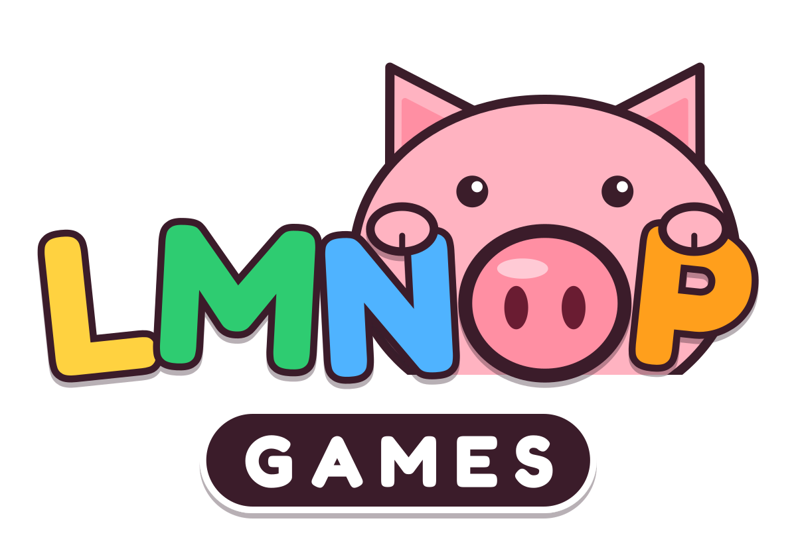

Independent games and prototypes.
Games
Pigs Gonna Blow!
: Pop pigs, unlock skins, and climb the leaderboard.
Bandwick
(prototype): Watch a band of people settle a wild island as they forage, build, feud and split into new bands.
Forest Sim
(prototype): Wander a low-poly forest, gather sticks, grass and ore, and craft your first tools.
Driftspan
(prototype): Lay bridges between drifting islands, gather wood and stone, and raise temples to claim new land.
Waterfall Radio
(prototype): Spin a globe of real radio receivers, see the airwaves as a 3D landscape, and tune in live anywhere on Earth.